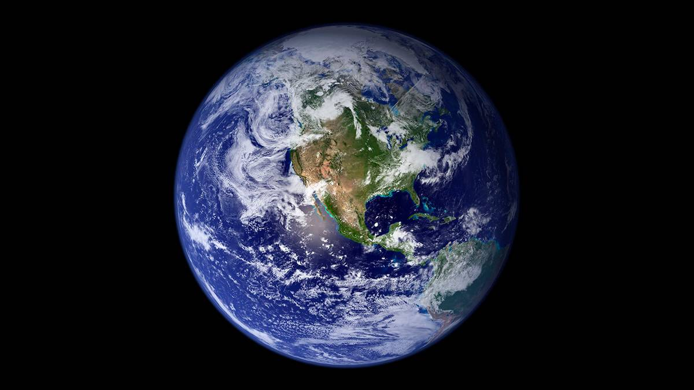

Terra
Introdução
A Terra é o terceiro planeta a partir do Sol e o único corpo celeste conhecido a abrigar vida. Formada há aproximadamente 4,5 bilhões de anos, a Terra interage gravitacionalmente com outros objetos no espaço, especialmente o Sol e a sua única lua natural, a Lua.
Características Físicas
É o maior e mais denso dos planetas rochosos. A superfície terrestre é dividida em placas tectônicas que migram gradualmente. Cerca de 71% da superfície é coberta por oceanos de água salgada, sendo que o restante consiste de continentes e ilhas. É o único planeta conhecido a ter água no estado líquido em sua superfície.

Atmosfera
A atmosfera da Terra consiste principalmente de nitrogênio (78%) e oxigênio (21%), com pequenas quantidades de vapor d'água, dióxido de carbono e outros gases. Essa mistura protege a vida filtrando a radiação ultravioleta do Sol através da camada de ozônio e regulando a temperatura através do efeito estufa.
Exploração Espacial
A exploração da Terra a partir do espaço começou em 1957 com o lançamento do Sputnik 1. Hoje, uma vasta rede de satélites artificiais e a Estação Espacial Internacional (ISS) monitoram constantemente o clima terrestre, os oceanos, a topografia e as mudanças ambientais.
Dados Comparativos
- Diâmetro: 12.742 km
- Massa: 1 massa terrestre (referência)
- Gravidade: 9,807 m/s²
- Dia (Rotação): 24 horas
- Luas: 1 (Lua)
Citação Científica
"Olhem de novo para esse ponto. É aqui. É a nossa casa. Somos nós."